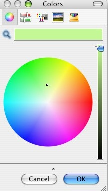

Pressing this menu item is equivalent to double-clicking the palette's swatch.
Both actions cause a Mac color-picker window to open. Color-picker windows
vary slightly with MacOS version. One specimen looks like this:

Choosing a color from this window and pressing OK changes the palette swatch to that color.